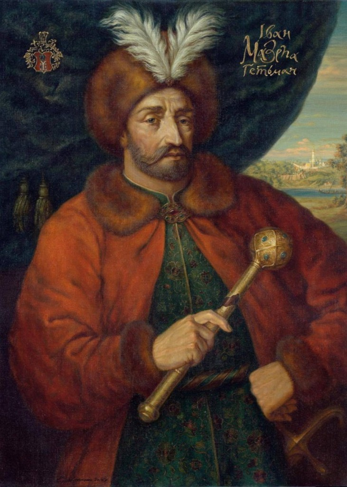
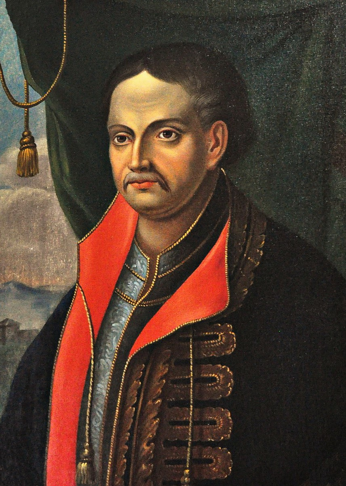
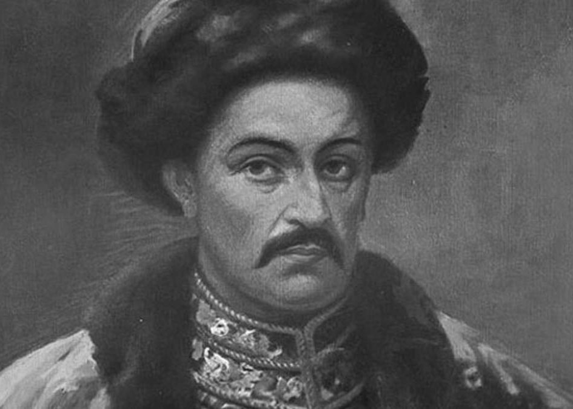
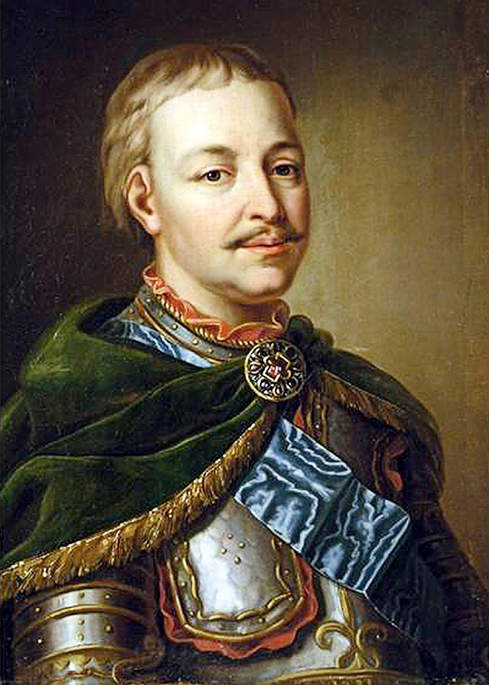
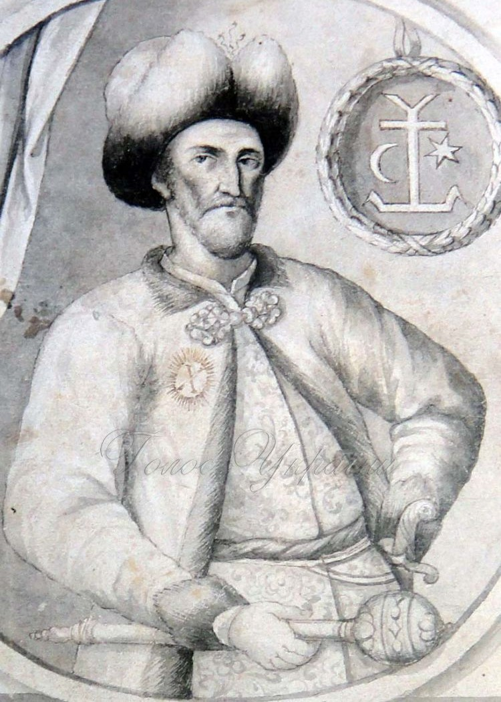

He strengthened the economy, developed culture, and promoted the construction of churches in the style of "Mazepa Baroque." In 1708, when muscovy violated the autonomy of the Hetmanate, Mazepa sided with the Swedish king Charles XII. However, after the defeat in the Battle of Poltava, the allies were forced to flee, and Mazepa died in exile in Moldova. His figure was long vilified by russian propaganda, but he is now considered a fighter for Ukrainian independence

